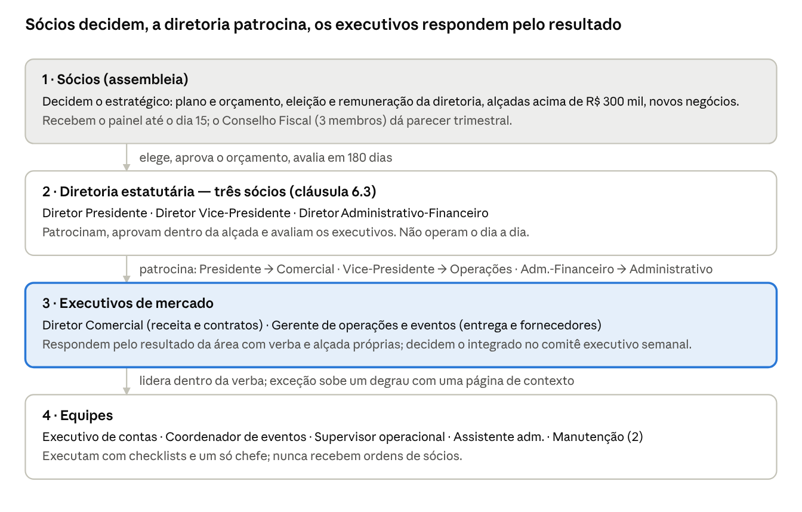
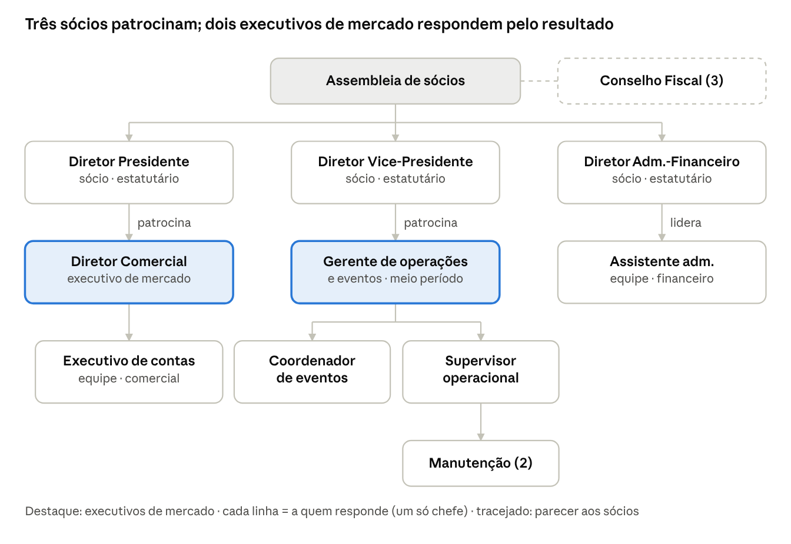

Playbook de Governança e Gestão — Campos Hall
Versão 1.2 · 12/11/2026
Propósito, ambição e metas
O Campos Hall existe para encher Campos do Jordão o ano inteiro com os melhores congressos e eventos do Brasil. Tudo neste playbook serve a esse propósito; as metas abaixo são propostas da gestão e passam a valer quando os sócios as fixarem no orçamento 2027 (deliberação 6).
Propósito
Encher Campos do Jordão o ano inteiro com os melhores congressos e eventos do Brasil.
Para o organizador: o evento que dá certo e volta — espaço, hospedagem e operação resolvidos em um só lugar.
Para a cidade e os hotéis: demanda nos meses em que a serra está vazia; cada congresso ocupa quartos, restaurantes e comércio.
Para os sócios: um ativo que se paga, presta contas todo mês e vale mais a cada ano.
O propósito também resolve conflitos: diante de uma decisão, a pergunta é se ela traz mais e melhores eventos para a cidade fora da alta temporada, com resultado para a sociedade. Festa própria, favor a sócio ou fornecedor preferido que não passem por essa pergunta ficam fora (política 6.3).
Ambição 2029
Ser reconhecido como o melhor centro de convenções do Brasil no seu porte: receita dobrada, calendário-âncora de congressos que renovam e NPS de 75 ou mais.
Metas
| Frente | Indicador | Base 2026 | Meta 2027 | Meta 2029 | Dono |
|---|---|---|---|---|---|
| Crescer | Receita bruta anual | Cerca de R$ 5 mi (R$ 3,77 mi de janeiro a setembro) | R$ 6,5 mi | R$ 10 mi | Diretor Comercial |
| Render | Margem EBITDA | 36% de janeiro a setembro | 33% ou mais, já com a nova estrutura | 38% ou mais | Diretor Adm.-Financeiro |
| Remunerar os sócios | Resultado líquido anual | R$ 298 mil de janeiro a setembro | R$ 0,8 mi | R$ 2 mi (cerca de 14% sobre os R$ 14,5 mi aportados) | Diretoria |
| Vender a baixa temporada | Dias de evento de setembro a abril | 34 dias na grade de 2027 hoje | 70 dias | 120 dias | Diretor Comercial |
| Vender a baixa temporada | Receita fora de maio a agosto | 35% | 42% | 50% | Diretor Comercial |
| Calendário-âncora | Congressos recorrentes com contrato para o ano seguinte | 3 de 6 para 2027; nenhum para 2028 e 2029 | 8 contratos de 2028 assinados até dezembro de 2027; renovação de 80% | 12 âncoras por ano, vendidas com 24 meses de antecedência | Diretor Comercial |
| Encantar o organizador | NPS e nota por evento | Não medido | Medido em 100% dos eventos; NPS 60 e nota 9 | NPS 75 e nota 9 | Gerente de operações |
| Encher os hotéis | Congressistas hospedados em hotéis parceiros | Não medido | Medido em todo congresso; 40% | 60% | Diretor Presidente |
| Casa em ordem | Licenças e laudos em dia | Várias sem data cadastrada; AVCB em renovação | 100% cadastradas em 60 dias; 100% em dia | 100% em dia | Diretor Vice-Presidente |
| Casa em ordem | Carteira vencida | 16% em 10/11/2026 | Abaixo de 10% | Abaixo de 5% | Diretor Adm.-Financeiro |
| Casa em ordem | Incidentes graves por ano | Não registrado | Zero | Zero | Gerente de operações |
| Confiança | Painel publicado até o dia 15; ritos realizados; declarações de interesse entregues | Declarações: 0 de 12 | 12 de 12 meses; 100%; 12 de 12 | Igual | Diretor Presidente |
As metas de 2027 e 2029 são hipótese da gestão: a de receita supõe crescer cerca de 30% no primeiro ano, o bastante para pagar a nova estrutura (R$ 60 mil a R$ 70 mil por mês) sem reduzir o resultado. As bases vêm do painel de governança e do Campos Hall OS (posição de 10/11/2026).
Como as metas descem para os cargos
| Cargo | Responde por | Prazo de serviço |
|---|---|---|
| Diretor Comercial | Receita, dias vendidos na baixa temporada, âncoras de 2028 | Retorno ao cliente em 24 h; proposta em 48 h; kit técnico em 72 h |
| Gerente de operações e eventos | NPS, nota por evento, incidentes, custo por evento | Checklist completo em D-7; avaliações em D+2 |
| Diretor Adm.-Financeiro | EBITDA, carteira vencida, caixa mínimo | Fechamento e painel até o dia 15 |
| Diretor Vice-Presidente | Licenças, investimentos no prazo | Matriz conferida todo mês |
| Diretor Presidente | Ritos, hotéis parceiros, confiança dos sócios | Ata em 48 h |
A diretoria revê as metas a cada trimestre na reunião de diretoria e presta contas delas aos sócios no painel mensal; a avaliação de cada ocupante de cargo (modelo 9.9) parte desta tabela.
1. Como usar este playbook
Este playbook é uma sugestão de plano detalhado de como o Campos Hall deve funcionar. Depois de aprovado pelos sócios, vale para quem quer que ocupe cada cargo, sócio ou não, e passa a ser a referência pela qual os sócios cobram a diretoria e a diretoria cobra os executivos. Não há nomes aqui — só cargos, regras e ritos.
| Parte | Quem segue | Natureza |
|---|---|---|
| 2. Modelo e regras de ouro | Todos | Obrigatória — muda só por deliberação dos sócios |
| 3. Cargos e descrições de função | Diretoria, executivos, equipe | Obrigatória — assinada por quem assume o cargo |
| 4. Ritos | Diretoria e executivos | Obrigatória — calendário fixo, ata em até 48 h |
| 5. Alçadas | Todos | Obrigatória — muda só por deliberação dos sócios |
| 6. Políticas | Todos | Obrigatória — a diretoria pode detalhar, não afrouxar |
| 7. Fornecedores | Operações, administrativo, comitê de fornecedores | Obrigatória — critérios e notas |
| 8. Leis, normas e licenças | Operações e administrativo | Obrigatória — matriz com semáforo no painel |
| 9–10. Checklists, modelos e ferramentas | Equipe | Modelos mínimos — podem ser ampliados, nunca pulados |
| 11. Onboarding e transição | Quem entra e quem sai de um cargo | Obrigatória |
Quem assume um cargo recebe este documento, assina o termo de ciência (seção 11) e passa a ser avaliado por ele.
A diretoria revisa o playbook uma vez por ano, na reunião de orçamento; mudanças de alçada, política ou estrutura vão aos sócios (seção 12).
Valores marcados como hipótese ou verificar ainda não foram confirmados com o jurídico, a contabilidade ou os órgãos públicos (seção 13).
Cláusulas citadas (5.5, 5.6.1, 5.6.2, 6.3, 6.12, 14.1.1) são do acordo de sócios vigente.
2. Modelo de governança
O Campos Hall é governado em quatro camadas: os sócios decidem o estratégico, a diretoria estatutária (três sócios, cláusula 6.3) patrocina, aprova e avalia, os executivos de mercado respondem pelo resultado das suas áreas e as equipes executam. A responsabilidade executiva fica com os executivos de mercado, cada um com um diretor-patrocinador.

A execução fica na camada 3: cada executivo responde pela sua área e tem um único patrocinador na diretoria.
Por que a execução fica com os executivos
A diretoria é formada por sócios, que atuam no nível estratégico e têm outras atividades. Por isso o dia a dia fica com executivos de mercado dedicados, e a diretoria concentra o seu tempo em patrocinar, aprovar e avaliar. Todo cargo, de sócio ou de executivo, tem dedicação mínima definida.
Quem responde por quê
| Responsabilidade | Quem responde |
|---|---|
| Resultado: metas, orçamento, indicadores | Cada executivo pela sua área; o Diretor Administrativo-Financeiro consolida no painel mensal |
| Equipe: contratar, liderar, avaliar | Cada executivo, dentro da sua verba; os executivos são avaliados pelo patrocinador a cada trimestre |
| Decisão integrada da semana | Comitê executivo (executivos + financeiro), presidido pelo Diretor Presidente; impasse entre áreas: o Presidente decide; exceção de alçada: reunião de diretoria |
| Canal entre sócios e equipe | A diretoria. Sócios falam com a diretoria; a diretoria fala com os executivos nos ritos; os executivos falam com as equipes |
| Representação institucional e estratégia | Diretor Presidente, com a diretoria |
| Dedicação | Diretor Presidente 2 a 3 h/semana (comitê executivo + preparação); Diretor Administrativo-Financeiro 3 a 4 h/semana; terceiro diretor 1 a 2 h/semana — hipótese, a confirmar pelos sócios |
Regras de ouro
Um só chefe: cada pessoa responde a um cargo, nunca a um sócio.
Ninguém pula degrau: pedidos de sócios entram pela diretoria, nunca direto na equipe.
Decide-se em rito, com ata em 48 h; o que não está em ata não foi decidido.
Autonomia dentro de verba, alçada e política; exceção sobe um degrau com uma página de contexto.
Transparência: painel mensal publicado aos sócios até o dia 15.
Partes relacionadas declaradas; quem tem interesse se abstém; o Conselho Fiscal revisa.
O cargo exige dedicação mínima: quem não pode cumpri-la não deve ocupá-lo.
O playbook vale para quem quer que ocupe os cargos; muda só por deliberação.
3. Estrutura e cargos
Dez cargos e um conselho, cada um com um único superior. A diretoria estatutária tem três sócios (6.3); os títulos abaixo seguem o acordo onde ele os nomeia e são sugestão onde não nomeia (verificar).

Cada caixa é um cargo, não uma pessoa; a linha diz a quem o cargo responde.
| Cargo | Tipo | Responde a | Lidera | Dedicação mínima |
|---|---|---|---|---|
| Diretor Presidente | Sócio, estatutário | Assembleia de sócios | Diretoria; patrocina o Diretor Comercial | 2–3 h/semana + ritos |
| Diretor Vice-Presidente (3ª cadeira, título a verificar) | Sócio, estatutário | Assembleia de sócios | Patrocina o Gerente de operações | 1–2 h/semana + ritos |
| Diretor Administrativo-Financeiro | Sócio, estatutário | Assembleia de sócios | Assistente administrativo; contabilidade e jurídico externos | 3–4 h/semana + fechamento |
| Diretor Comercial | Executivo de mercado | Diretor Presidente (patrocinador) | Executivo de contas; agência de marketing | Integral |
| Gerente de operações e eventos | Executivo de mercado | Diretor Vice-Presidente (patrocinador) | Coordenador de eventos, supervisor, manutenção | Meio período + presença nos grandes eventos |
| Executivo de contas | Equipe | Diretor Comercial | — | Integral |
| Coordenador de eventos | Equipe (nova vaga) | Gerente de operações | Staff de evento | Integral |
| Supervisor operacional | Equipe (nova vaga) | Gerente de operações | Manutenção e terceiros no evento | Integral, escala por evento |
| Assistente administrativo | Equipe | Diretor Administrativo-Financeiro | — | Integral |
| Manutenção (2) | Equipe | Supervisor operacional | — | Integral |
| Conselho Fiscal (3) | Eleito pelos sócios (6.12) | Assembleia de sócios | — | Trimestral |
Diretor Presidente
Missão: representar o Campos Hall, presidir os ritos e garantir que o resultado combinado aconteça sem operar o dia a dia.
Responsabilidades: convoca e preside assembleias e a reunião de diretoria; preside o comitê executivo semanal e decide impasses entre áreas; representa a casa junto a prefeitura, entidades, imprensa e sócios; aprova plano, orçamento e metas com a diretoria; patrocina e avalia o Diretor Comercial a cada trimestre; responde pelo programa de hospedagem com os hotéis dos sócios.
Alçadas: assina pela sociedade conforme o acordo; gastos até R$ 150 mil em conjunto com o Diretor Administrativo-Financeiro, dentro do orçamento (seção 5).
Indicadores: resultado anual × meta; cumprimento do calendário de ritos; avaliação dos sócios (180 dias).
Não faz: não recebe demandas operacionais, não dá ordens à equipe, não negocia contratos de evento.
Diretor Vice-Presidente (terceira cadeira)
Missão: substituir o Presidente e patrocinar operações, patrimônio e compliance.
Responsabilidades: patrocina e avalia o Gerente de operações; acompanha investimentos (cozinha, elevadores), manutenção e a matriz de licenças; preside o comitê de operações trimestral; substitui o Presidente nos ritos.
Alçadas: as da diretoria em conjunto (seção 5).
Indicadores: licenças e laudos em dia (100%); incidentes por evento; obras no prazo.
Diretor Administrativo-Financeiro
Missão: caixa, fechamento, painel e controle do orçamento.
Responsabilidades: caixa e aplicações; aprova pagamentos acima de R$ 20 mil (com o executivo da área); fechamento mensal até o dia 15 e publicação do painel; orçamento anual e controle de desvios por verba; relação com contabilidade, jurídico e Conselho Fiscal; registro de partes relacionadas; lidera o assistente administrativo.
Alçadas: pagamentos dentro do orçamento; gastos até R$ 150 mil com o Presidente; até R$ 300 mil com a diretoria.
Indicadores: fechamento no dia 15; inadimplência da carteira (meta < 10% vencidos); desvio orçamentário por verba; caixa mínimo.
Diretor Comercial (executivo de mercado)
Missão: receita e ocupação do calendário, com margem.
Responsabilidades: meta de receita e ocupação; tabela de preços e política comercial; aprova descontos de 15% a 30% com margem mínima; assina contratos-padrão por procuração (6.7.1); negocia o bloco de hospedagem com organizadores e hotéis; orienta a agência de marketing e o CRM; lidera o executivo de contas; entrega o briefing comercial à operação (modelo 9.6).
Alçadas: preços, descontos e contratos sem limite de valor dentro da política comercial; gastos até R$ 50 mil dentro da verba comercial.
Indicadores: receita contratada × meta; ocupação (dias vendidos/dias úteis); ticket médio; taxa de conversão de propostas; receita contratada para o ano seguinte; diárias geradas nos hotéis dos sócios.
Perfil: experiência comprovada em vendas de eventos, hotelaria ou centros de convenções; carteira de organizadores; dedicação integral em contrato.
Gerente de operações e eventos (executivo de mercado)
Missão: entregar cada evento com segurança, padrão e custo dentro da verba.
Responsabilidades: plano de cada evento; fornecedores homologados e sua avaliação; segurança, brigada, lotação e licenças do evento; manutenção predial e checklist semanal; lidera coordenador, supervisor e manutenção; conduz os investimentos aprovados; preside o comitê de fornecedores e catering.
Alçadas: gastos até R$ 50 mil dentro da verba de operações; contratação de fornecedores homologados sem limite por evento, dentro do orçamento do evento.
Indicadores: nota do cliente pós-evento (meta ≥ 9/10); incidentes; custo operacional por evento × orçado; checklist de manutenção em dia; nota média dos fornecedores.
Perfil: experiência comprovada em operação de eventos ou hotelaria; dedicação mínima e presença nos eventos de grande porte em contrato.
Executivo de contas
Missão: converter demanda em contrato.
Responsabilidades: resposta a clientes em até 24 h; visita e proposta em 48 h; registro de tudo no CRM; inclui o bloco de hospedagem em toda proposta; entrega o briefing ao coordenador de eventos após a assinatura.
Alçadas: descontos até 15%; acima, Diretor Comercial.
Indicadores: tempo de resposta; propostas emitidas; conversão; CRM atualizado (100% das oportunidades).
Coordenador de eventos
Missão: ser o dono do cliente do contrato ao pós-evento.
Responsabilidades: recebe o briefing; monta o plano do evento (checklist 9.1); coordena fornecedores, montagem, hospedagem, transfer e credenciamento; acompanha o evento; aplica a avaliação pós-evento ao cliente e aos fornecedores; abre o relatório pós-evento.
Indicadores: checklist completo em D-7; nota do cliente; reclamações; avaliações de fornecedor entregues em 48 h.
Supervisor operacional
Missão: a casa pronta e segura em todo evento.
Responsabilidades: presente em todos os eventos; abertura e fechamento; checklist de segurança (9.2) e de cozinha (9.3); brigada e segurança privada no evento; manutenção e terceiros; registro de incidentes.
Indicadores: zero eventos sem checklist assinado; incidentes registrados em 24 h; manutenção preventiva cumprida.
Assistente administrativo
Missão: contas, documentos e licenças em dia.
Responsabilidades: contas a pagar e a receber; notas e faturamento; cobrança semanal do vencido; documentos para a contabilidade; cadastro e documentação de fornecedores; matriz de licenças (seção 8) conferida todo mês; apuração de comissões e cashback do programa de hospedagem.
Indicadores: vencidos cobrados na semana; matriz de licenças sem vermelho; fornecedores com documentação válida.
Manutenção (duas pessoas)
Missão: prédio e equipamentos funcionando.
Responsabilidades: manutenção preventiva e corretiva com checklist semanal (9.4); apoio à montagem e desmontagem; recebem demandas só do supervisor — nunca de sócios ou clientes.
Conselho Fiscal
Três membros eleitos pelos sócios (6.12); parecer trimestral sobre contas, partes relacionadas, programa de hospedagem e fornecedores ligados a sócios; acesso irrestrito ao painel e aos contratos.
Apoio externo
Contabilidade e jurídico (Diretor Administrativo-Financeiro); nutricionista responsável técnico da cozinha e agência de marketing (contratos de serviço com metas, revistos todo ano); segurança privada e brigada (empresas autorizadas, por evento); internet e TI, áudio e vídeo e os demais serviços de evento, por fornecedores homologados (seção 7).
4. Ritos de gestão
A casa é governada por nove ritos com data fixa; toda decisão nasce em um deles e vira ata em 48 h. A soma para a diretoria é de 2 a 4 horas por semana por diretor, concentradas nos ritos.
| Rito | Frequência | Preside | Participantes | Pauta-padrão | Entregável |
|---|---|---|---|---|---|
| Comitê executivo | Semanal, segunda, 1 h | Diretor Presidente | Diretor Comercial, Gerente de operações, Diretor Adm.-Financeiro (ou assistente) | Caixa da semana; pipeline e propostas; eventos dos próximos 30 dias; pendências; exceções de alçada (uma página cada) | Ata com decisões e donos; painel semanal na sexta |
| Reunião de operações e eventos | Semanal, terça, 45 min | Gerente de operações | Coordenador, supervisor, executivo de contas | Plano de cada evento (D-30, D-7, D-1); fornecedores; manutenção; incidentes | Checklists atualizados |
| Fechamento e comitê financeiro | Mensal, até o dia 15 | Diretor Adm.-Financeiro | Assistente, contabilidade, Presidente | DRE, caixa, carteira e vencidos, desvio por verba, licenças (semáforo) | Painel mensal publicado aos sócios |
| Comitê comercial | Mensal, 1 h | Diretor Comercial | Executivo de contas, agência, Presidente | Pipeline 12 meses, preços e descontos concedidos, programa de hospedagem, marketing | Previsão de receita atualizada |
| Reunião de diretoria | Mensal, 1 h | Diretor Presidente | Os três diretores; executivos convidados por pauta | Exceções de alçada; investimentos; partes relacionadas; avaliação dos executivos (trimestral) | Ata assinada |
| Reunião de sócios (5.2.1) | Mensal, por vídeo | Diretor Presidente | Sócios | Painel do mês; deliberações pendentes; perguntas | Ata e votos registrados |
| Comitê de operações | Trimestral | Diretor Vice-Presidente | Gerente, coordenador, supervisor | Padrões de serviço; manutenção e obras; preparação da temporada; matriz de licenças | Plano trimestral de manutenção |
| Comitê de fornecedores e catering | Trimestral | Gerente de operações | Coordenador, assistente, nutricionista RT | Scorecard dos homologados; vagas; penalidades; regras da cozinha | Lista de homologados atualizada |
| Conselho Fiscal | Trimestral | Presidente do Conselho | Três conselheiros; Diretor Adm.-Financeiro convidado | Contas; partes relacionadas; hospedagem; fornecedores ligados a sócios | Parecer aos sócios |
Ritos anuais
Setembro–outubro: plano de negócios e orçamento do ano seguinte, com a verba de cada diretoria, metas e investimentos; aprovação pelos sócios (5.6.1).
Outubro: revisão deste playbook pela diretoria; mudanças de alçada ou política vão aos sócios.
Novembro: reavaliação anual dos fornecedores homologados e abertura de vagas.
Março: assembleia de contas do ano anterior, com parecer do Conselho Fiscal.
Dia 180 da posse de cada ocupante de cargo: avaliação pelos sócios (diretoria) ou pelo patrocinador (executivos) — manter, ajustar ou encerrar.
Regras dos ritos
Pauta enviada 24 h antes; quem não enviou tema não o traz na hora.
Exceção de alçada chega com uma página: o que, quanto, por que, alternativa, risco de não fazer.
Ata em 48 h no modelo 9.5, com decisão, dono e prazo; arquivada na pasta de governança.
Rito sem quórum não decide: o tema volta na semana seguinte ou sobe um degrau.
Nenhum rito recebe fornecedor ou sócio-fornecedor na parte da pauta que trata do seu contrato.
5. Alçadas e decisões
Receita é 100% dos executivos e da diretoria, sem limite de valor; gastos e investimentos têm faixas até R$ 300 mil dentro do orçamento; acima disso, ou fora do orçamento, decidem os sócios. Até a aprovação do orçamento 2027 vale uma alçada provisória de R$ 100 mil.
| Decisão | Quem decide | Limite | Registro |
|---|---|---|---|
| Preço, proposta e contrato-padrão de evento | Executivo de contas (desconto até 15%); Diretor Comercial (15–30%, margem mínima); acima de 30%, reunião de diretoria | Sem limite de valor | CRM + contrato assinado por procuração (6.7.1) |
| Contrato fora do padrão (cláusulas, prazo > 24 meses, exclusividade) | Diretor Comercial com parecer jurídico; diretoria | — | Ata da diretoria |
| Gasto dentro da verba da área | Executivo da área | Até R$ 50 mil por operação | Pedido no sistema; pagamento > R$ 20 mil com o Dir. Adm.-Financeiro |
| Gasto ou investimento dentro do orçamento | Presidente + Dir. Adm.-Financeiro | R$ 50 mil a R$ 150 mil | Ata do comitê executivo |
| Gasto ou investimento dentro do orçamento | Os três diretores | R$ 150 mil a R$ 300 mil | Ata da diretoria |
| Acima de R$ 300 mil, ou fora do orçamento | Sócios | 7 de 12 votos (5.5); bens móveis acima de R$ 300 mil em 12 meses: 75% (5.6.2 c) | Ata de assembleia |
| Contratação e desligamento na equipe | Executivo da área, dentro da verba e do organograma aprovado | Verba da área | Comunicado ao comitê executivo |
| Contratação de executivo de mercado | Diretoria, por seleção com três candidatos; abstencão de quem tiver interesse | Verba aprovada | Ata da diretoria |
| Homologação e descredenciamento de fornecedor | Comitê de fornecedores; fornecedor ligado a sócio ou gestor: diretoria com abstencão + revisão do Conselho Fiscal | — | Lista de homologados |
| Novo negócio ou atividade fora do objeto | Sócios | 75% (5.6.2 a) | Ata de assembleia |
| Parcerias e exclusividades | Sócios | 75% (5.6.2 f) — verificar alcance | Ata de assembleia |
| Orçamento, plano de negócios e metas | Sócios | 8 de 12 votos (5.6.1) | Ata de assembleia |
| Eleição e remuneração da diretoria | Sócios | 2/3 (6.3); remuneração 4–6% do faturamento (14.1.1), interessados se abstêm | Ata de assembleia |
| Evento próprio do Campos Hall | Diretoria, só com orçamento aprovado e produtor assumindo o risco | Orçamento do evento | Ata da diretoria |
| Mudança deste playbook (alçada, política, estrutura) | Sócios | 7 de 12 votos (5.5) | Ata + nova versão |
Regras de aplicação
Alçada é por operação; fracionar um gasto para caber na faixa é falta grave.
Quem tem interesse direto ou indireto não vota nem assina; declara e sai da sala naquele item.
Abstenção em assembleia conta como voto contrário; convocação com 8 dias e voto por e-mail (5.2.2, 5.2.3) — verificar.
Procurações dos executivos limitadas ao contrato-padrão e às faixas acima, renovadas a cada ano.
6. Políticas
Oito políticas cobrem tudo o que não é decisão de evento a evento. A diretoria pode detalhá-las em procedimentos; só os sócios podem afrouxar uma regra.
6.1 Comercial
Tabela de preços por salão, dia da semana e temporada, revista a cada ano pelo comitê comercial; descontos só pelas alçadas da seção 5.
Contrato-padrão com sinal de 30% na assinatura, saldo até D-7, multa de cancelamento escalonada (D-90, D-30, D-7) e lotação máxima do AVCB escrita no contrato — percentuais são hipótese.
Toda proposta inclui o bloco de hospedagem (6.4) e o pacote de fornecedores homologados.
Nenhum evento acima da lotação; nenhum evento sem seguro de responsabilidade civil do organizador ou da casa.
Patrocínio e permuta entram no CRM com valor de mercado e passam pela mesma alçada de desconto.
Prazos e funil comercial (os mesmos do Campos Hall OS):
Retorno a todo lead em 24 h; proposta em 48 h; kit técnico para concorrências em 72 h.
Pré-reserva de data vale 7 dias; depois disso a data volta ao calendário. Reserva só vira bloqueio com contrato assinado e sinal pago.
Funil único em 13 etapas, do lead ao evento entregue à operação; toda oportunidade tem dono, valor, data e próximo passo no CRM.
Preço por temporada e dia da semana (alta de maio a agosto; sexta e sábado), com tarifa de baixa temporada para terça a quinta — multiplicadores a aprovar com a tabela.
Margem mínima por evento definida no orçamento; proposta abaixo dela sobe uma alçada.
Congresso recorrente recebe preferência de data para a edição seguinte ao assinar o contrato, e a renovação é oferecida no relatório pós-evento.
6.2 Partes relacionadas
Parte relacionada é qualquer sócio, parente até 2º grau, empresa ligada a sócio ou a gestor, e empresa de qualquer ocupante de cargo.
Toda relação comercial com parte relacionada é registrada pelo Diretor Adm.-Financeiro, tem preço de mercado comprovado por dois ou três orçamentos, é aprovada com abstenção do interessado e revisada pelo Conselho Fiscal a cada trimestre.
Nenhum ativo da casa pertence a sócio ou fornecedor; nenhum sócio usa a casa fora da política 6.3.
6.3 Eventos fora da atividade-fim
Sócio que quer realizar um evento assume o risco e contrata o Campos Hall pelo contrato-padrão e pela tabela, com a alçada de desconto comum.
Evento filantrópico só sem renúncia de receita: um terceiro paga, ou a data é de baixa ocupação e o custo direto é coberto; aprovação pela diretoria com registro.
Evento próprio do Campos Hall só com orçamento aprovado e produtor assumindo o risco; novo negócio só com 75% dos sócios.
6.4 Programa de hospedagem com os hotéis dos sócios
Produto “congresso + hospedagem”: pré-reserva de quartos por categoria com tarifa de congresso, transfer, early check-in e late check-out, cashback ao produtor do evento e desconto ao congressista; desconto na locação cresce com as diárias geradas.
Adesão dos hotéis por contrato-padrão idêntico para todos; comissão paga pelos hotéis (hipótese 10%) financia cashback, transfer e desconto e o saldo é receita do Campos Hall.
Ferramentas: página de reservas por evento com código por hotel ou central de reservas; acompanhamento semanal no CRM; relatório trimestral de diárias por hotel ao Conselho Fiscal.
Hotel de sócio é parte relacionada: mesmas regras, mesma comissão, sem preferência de indicação — a ordem de oferta ao cliente segue categoria e distância.
6.5 Compras e verbas
Cada diretoria tem verba anual aprovada no orçamento; o executivo decide dentro dela sem pedir autorização.
Compras acima de R$ 10 mil com três orçamentos; acima de R$ 50 mil, contrato escrito e parecer jurídico quando houver cláusula de exclusividade ou prazo > 12 meses — valores são hipótese.
Pagamento só com nota fiscal, contrato ou pedido aprovado e entrega conferida.
Investimentos aprovados têm dono, cronograma e entrega medida (ex.: cozinha licenciada e em uso; elevadores com laudo e manutenção ativa).
6.6 Pessoas
Contratação dentro da verba e do organograma; executivos de mercado por seleção com ao menos três candidatos e contrato com dedicação mínima, metas e avaliação em 90 e 180 dias.
Diretoria remunerada conforme o acordo (14.1.1); nenhuma remuneração a empresa de sócio por gestão.
Equipe de evento (intermitente ou por escala) só com vínculo regular e treinamento de segurança; convenção coletiva aplicável — verificar.
Cada cargo tem descrição de função assinada e avaliação trimestral pelo superior.
6.7 Marketing, marca e conteúdo
Marca registrada no INPI e manual de uso; agência com metas de leads e conteúdo por contrato anual.
Calendário de conteúdo mensal aprovado pelo Diretor Comercial; eventos de clientes só divulgados com autorização escrita.
Site, redes e CRM são ativos do Campos Hall, com acessos em nome da empresa e senha trocada a cada troca de ocupante.
6.8 Dados e LGPD
Listas de congressistas, dados de clientes e câmeras são tratados com base legal definida, acesso por cargo e descarte ao fim do prazo.
Contratos com organizadores e fornecedores trazem cláusula de proteção de dados; incidente é registrado em 24 h e avaliado pelo jurídico.
Encarregado de dados designado (pode ser o Diretor Adm.-Financeiro) — verificar com o jurídico.
7. Fornecedores: homologação, monitoramento e avaliação
Só fornecedor homologado trabalha na casa; o cliente escolhe entre os homologados da categoria e paga a mesma taxa seja qual for a escolha. Catering tem cinco vagas, sem exclusividade, e usa a cozinha do Campos Hall.
7.1 Categorias e vagas
| Categoria | Vagas | Exigência específica |
|---|---|---|
| Catering e buffet | 5 | Licença sanitária, nutricionista RT, manual de boas práticas (RDC 216/2004), rastreabilidade de insumos |
| Áudio, vídeo, iluminação e tradução | 3–5 | ART elétrica quando houver quadro próprio; equipe com NR-10 e NR-35 |
| Montagem, cenografia e estruturas | 3 | ART de montagem e laudo de estabilidade por evento; NR-35 |
| Segurança privada e controle de acesso | 2–3 | Autorização da Polícia Federal (Lei 14.967/2024) e certificado de segurança |
| Brigada e bombeiro civil, ambulância | 2 | Certificação IT 17 (SP) e Lei 11.901/2009; ambulância conforme exigência municipal |
| Limpeza e resíduos | 2 | Plano de resíduos; produtos com registro |
| Recepção, credenciamento e staff | 2–3 | Vínculo regular do staff; treinamento de segurança |
| Transporte e transfer | 2–3 | Autorização de fretamento (ANTT ou órgão estadual), seguro de passageiros |
| Decoração, flores e mobiliário | 3 | Material com classe de reação ao fogo quando exigido pelo AVCB |
| Gráfica e sinalização | 2 | — |
| Internet, TI e credenciamento digital | 2 | Internet dedicada e Wi-Fi do evento por fornecedor homologado; contrato com nível de serviço e LGPD; teste em D-1 |
| Geradores e energia temporária | 2 | ART, abastecimento e ruído dentro da norma |
Vaga aberta é preenchida por edital simples (7.2) no comitê de fornecedores seguinte; fornecedor que sai libera a vaga. Cliente que exige fornecedor próprio paga taxa de uso da casa e o fornecedor cumpre os requisitos mínimos de documentação e segurança daquele evento.
7.2 Critérios de homologação
Documentação obrigatória (sem ela não há pontuação):
CNPJ ativo e contrato social; certidões federal, FGTS e trabalhista; alvará da sede.
Apólice de responsabilidade civil (valor mínimo definido pelo comitê por categoria — hipótese: R$ 500 mil).
Licenças da categoria (tabela 7.1); comprovante de vínculo e treinamento da equipe que entra na casa.
Três referências de clientes dos últimos 24 meses, com contato.
Tabela de preços de referência válida por 12 meses e condições de pagamento.
Termo de adesão às regras da casa (modelo 9.10): horários, acessos, resíduos, conduta, LGPD, taxa e penalidades.
Declaração de vínculo com sócio ou gestor (parte relacionada), positiva ou negativa.
Pontuação (mínimo 70 de 100 para homologar; empate decidido por preço):
| Critério | Peso | Como medir |
|---|---|---|
| Qualidade comprovada | 30 | Visita técnica ou prova (degustação para catering); referências checadas |
| Preço | 25 | Tabela × média dos concorrentes da categoria |
| Capacidade e estrutura | 20 | Equipe, equipamentos, capacidade de atender dois eventos simultâneos |
| Compliance e segurança | 15 | Documentação completa, histórico de incidentes, seguro |
| Atendimento e prazo | 10 | Tempo de resposta na seleção, flexibilidade de escala |
O comitê de fornecedores pontua, o Gerente de operações homologa e a lista vai ao comitê executivo. Fornecedor ligado a sócio ou gestor passa pelas mesmas regras e pela mesma taxa; a homologação é aprovada pela diretoria com abstenção do interessado e revisada pelo Conselho Fiscal.
7.3 Monitoramento e avaliação
Nota por evento (0 a 10), dada em 48 h pelo coordenador de eventos com o cliente (modelo 9.8): pontualidade, conformidade com o combinado, apresentação e conduta da equipe, limpeza e devolução do espaço, segurança. Catering recebe também a nota do nutricionista RT (checklist de cozinha, temperaturas, rastreabilidade).
Scorecard trimestral por fornecedor: média das notas, reclamações, incidentes, documentação válida, preço praticado × tabela.
Faixas: média ≥ 8,0 mantém; 6,0 a 7,9 plano de melhoria em 30 dias; abaixo de 6,0 suspensão até o próximo comitê; duas suspensões em 12 meses ou um incidente grave (segurança, sanitário, trabalhista) descredenciam.
Penalidades progressivas em contrato: advertência escrita; multa de 10% do serviço do evento; suspensão; descredenciamento — percentual é hipótese.
Reunião anual com todos os homologados em novembro: resultados, metas, tabela do ano seguinte e vagas.
Auditoria documental anual pelo assistente administrativo; documento vencido bloqueia o fornecedor na escala até regularizar.
7.4 Regras da cozinha e do catering
A cozinha, a infraestrutura e os equipamentos são do Campos Hall e servem aos cinco homologados; manutenção, seguro e inventário da casa; taxa de uso embutida na taxa de catering.
Checklist de entrega e devolução (9.3) assinado pelo supervisor e pelo fornecedor em cada evento; dano apurado em 24 h e cobrado do fornecedor.
Nutricionista RT do Campos Hall responde pela licença sanitária da cozinha; cada fornecedor traz seu manual de boas práticas, POPs e controle de temperatura e assina o termo de uso.
Resíduos, óleo e gás seguem o plano da casa; nenhum equipamento de fornecedor fica na cozinha fora do evento.
O cliente escolhe o catering entre os cinco; a casa apresenta a lista completa com a mesma informação para todos, sem ranking por interesse.
8. Leis, normas e licenças que regem o centro de convenções
Trinta obrigações, cada uma com dono, periodicidade e evidência; a matriz vive no painel com semáforo (verde em dia, amarelo vence em 60 dias, vermelho vencido) e é conferida pelo assistente administrativo todo mês. Itens municipais são de Campos do Jordão e precisam ser confirmados na Prefeitura (verificar); nada aqui substitui parecer jurídico.
8.1 Funcionamento e segurança do prédio
| Obrigação | Base | Órgão | Periodicidade | Dono | Evidência |
|---|---|---|---|---|---|
| Alvará de funcionamento e uso do solo | Lei municipal (verificar) | Prefeitura | Anual ou conforme o alvará | Assistente adm. / Dir. Adm.-Financeiro | Alvará válido na pasta |
| AVCB com lotação máxima | Decreto Estadual SP 63.911/2018 e ITs do CBPMESP (IT 12 – centros esportivos e de exibição) | Corpo de Bombeiros | Conforme o AVCB (verificar prazo) | Gerente de operações | AVCB; lotação escrita em todo contrato |
| Brigada de incêndio e plano de emergência | IT 17/2025 (CBPMESP); Lei 11.901/2009 (bombeiro civil) | Corpo de Bombeiros | Treinamento anual; dimensionamento por evento | Supervisor operacional | Certificados; plano de abandono afixado |
| Sinalização e saídas de emergência | NBR 16820 (sinalização); IT 11 (saídas) | Corpo de Bombeiros | Inspeção semestral interna | Supervisor operacional | Checklist 9.2 |
| Instalações elétricas e laudo | NBR 5410; NR-10 | CREA (ART) | Laudo anual; ART por intervenção | Gerente de operações | Laudo + ART |
| Para-raios (SPDA) | NBR 5419 | CREA (ART) | Laudo anual | Gerente de operações | Laudo |
| Elevadores e plataformas | NBR 16083 (manutenção); NBR 9050; lei municipal (verificar) | Prefeitura / empresa conservadora | Manutenção mensal; laudo anual | Gerente de operações | Contrato + relatórios |
| Climatização (PMOC) | Lei 13.589/2018 | Vigilância Sanitária | Plano contínuo; registro mensal | Manutenção | PMOC assinado |
| Gás (GLP) | NBR 13523; NBR 15526 | Corpo de Bombeiros / CREA | Inspeção anual | Manutenção | Laudo |
| Reservatórios de água e controle de pragas | Código sanitário estadual (Lei SP 10.083/1998) e normas municipais | Vigilância Sanitária | Limpeza semestral; dedetização conforme plano | Manutenção | Certificados |
| Acessibilidade | Lei 13.146/2015; NBR 9050 | Prefeitura / Ministério Público | Laudo na obra; checklist anual | Gerente de operações | Laudo de acessibilidade |
8.2 Eventos
| Obrigação | Base | Órgão | Periodicidade | Dono | Evidência |
|---|---|---|---|---|---|
| Autorização para evento de grande porte e plano de segurança | Lei municipal e IT do CBPMESP para eventos temporários (verificar exigência local) | Prefeitura, PM, Bombeiros | Por evento acima do limite definido | Coordenador de eventos | Ofício/autorização na pasta do evento |
| Estruturas temporárias (palcos, tendas, arquibancadas) | Lei 6.496/1977 (ART); NR-35; diretrizes CONFEA para eventos temporários | CREA | Por evento | Gerente de operações | ART + laudo de estabilidade |
| Segurança privada no evento | Lei 14.967/2024 e Decreto 13.012/2026 | Polícia Federal | Por evento | Supervisor operacional | Contrato com empresa autorizada |
| Ambulância/UTI móvel e brigada dimensionadas | Exigência municipal e IT 17 | Prefeitura / Bombeiros | Por evento conforme público | Coordenador de eventos | Contrato na pasta do evento |
| Direitos autorais de música | Lei 9.610/1998 (ECAD) | ECAD | Por evento com execução pública | Coordenador de eventos (responsabilidade do organizador em contrato) | Comprovante ou cláusula contratual |
| Meia-entrada e ingressos | Lei 12.933/2013 (quando há venda de ingresso) | Procon | Por evento com bilheteria | Executivo de contas | Cláusula no contrato do organizador |
| Menores e álcool | Lei 8.069/1990 (ECA), art. 81 | Conselho Tutelar / PM | Por evento | Supervisor operacional | Orientação ao catering e à segurança |
| Ruído | NBR 10151; lei municipal de silêncio (verificar) | Prefeitura | Por evento noturno | Supervisor operacional | Medição quando exigida |
8.3 Alimentação
| Obrigação | Base | Órgão | Periodicidade | Dono | Evidência |
|---|---|---|---|---|---|
| Licença sanitária da cozinha e responsável técnico | RDC 216/2004 ANVISA (alterada pela RDC 52/2014); Portaria CVS 5/2013 (SP) | Vigilância Sanitária municipal | Anual | Nutricionista RT / Gerente de operações | Licença; manual de boas práticas; POPs |
| Boas práticas dos fornecedores de catering | RDC 216/2004 | Vigilância Sanitária | Por evento (checklist) | Nutricionista RT | Nota por evento (7.3) |
8.4 Empresa, trabalho e dados
| Obrigação | Base | Órgão | Periodicidade | Dono | Evidência |
|---|---|---|---|---|---|
| Saúde e segurança do trabalho | NR-1 (PGR), NR-7 (PCMSO), NR-23, NR-35 | Ministério do Trabalho | Anual | Dir. Adm.-Financeiro | PGR, PCMSO, treinamentos |
| Vínculos e escalas de evento | CLT; contrato intermitente; convenção coletiva (verificar sindicato) | Ministério do Trabalho | Contínuo | Executivo da área | eSocial em dia |
| Relação de consumo | Lei 8.078/1990 (CDC) | Procon | Contínuo | Diretor Comercial | Contrato-padrão revisado pelo jurídico |
| Proteção de dados | Lei 13.709/2018 (LGPD) | ANPD | Contínuo | Dir. Adm.-Financeiro (encarregado) | Política 6.8; cláusulas |
| Tributos e ISS | Código Tributário Municipal (verificar regime) | Prefeitura / Receita | Mensal | Dir. Adm.-Financeiro | Guias e certidões |
| Cadastur | Lei 11.771/2008 — opcional para centros de convenções | Ministério do Turismo | Anual se aderir | Diretor Comercial | Certificado |
| Marca | Lei 9.279/1996 (INPI) | INPI | Renovação decenal | Diretor Comercial | Certificado de registro |
| Seguros | Patrimonial, responsabilidade civil, D&O (verificar cobertura) | Seguradora | Anual | Dir. Adm.-Financeiro | Apólices |
| Integridade | Lei 12.846/2013 | — | Contínuo | Diretoria | Código de conduta assinado por equipe e fornecedores |
Fontes consultadas em 11/11/2026: RDC 216/2004 – texto consolidado (FAOLEX); Lei 14.967/2024 – Agência Câmara. Demais normas citadas por conhecimento geral; vigência e edição a confirmar pelo jurídico.
9. Checklists e modelos
Onze modelos mínimos; cada um vira um formulário digital (seção 10) e é arquivado na pasta do evento ou do mês. Podem ganhar itens, nunca perdê-los.
9.1 Checklist de evento (coordenador de eventos)
| Marco | Itens |
|---|---|
| Contrato assinado | Briefing recebido (9.6); pasta do evento aberta; sinal recebido; lotação confirmada no contrato; bloco de hospedagem ativado |
| D-30 | Planta e cronograma de montagem; fornecedores escolhidos pelo cliente entre os homologados; necessidade de autorização municipal, brigada, segurança e ambulância definida; ART de estruturas solicitada; seguro do organizador recebido |
| D-7 | Saldo recebido; escala de equipe e terceiros; ordem de serviço a cada fornecedor; cozinha reservada para o catering; checklist de segurança agendado; credenciamento e sinalização prontos; transfer e hospedagem confirmados |
| D-1 | Montagem conferida contra a planta; laudo de estruturas em mãos; teste de energia, som e internet; limpeza; briefing da equipe (horários, emergência, contatos) |
| Dia D | Abertura pelo supervisor (9.2); contagem de público × lotação; rondas a cada 2 h; registro de ocorrências; fechamento e entrega da cozinha (9.3) |
| D+2 | Avaliação do cliente e dos fornecedores (9.8); relatório pós-evento (9.7); danos apurados; faturamento complementar; diárias de hotel apuradas |
9.2 Checklist de segurança do dia (supervisor operacional)
Saídas de emergência livres e sinalizadas; portas destravadas no sentido do fluxo
Extintores e hidrantes no prazo e desobstruídos; iluminação de emergência testada
Brigada e segurança presentes conforme dimensionamento; lista nominal na portaria
Lotação máxima afixada e contagem ativa
Estruturas temporárias com ART e laudo; cabos protegidos; quadros elétricos fechados
Gerador abastecido, aterrado e isolado do público; gás inspecionado
Acessibilidade: rampas, banheiros e assentos reservados livres
Ambulância e ponto de primeiros socorros posicionados (quando exigido)
Contatos de emergência e plano de abandono com a equipe
Assinatura do supervisor e hora da abertura
9.3 Checklist da cozinha — entrega e devolução (supervisor + fornecedor)
Inventário de equipamentos e utensílios conferido na entrega e na devolução
Equipamentos testados (frio, cocção, exaustão, gás); temperaturas registradas
Fornecedor com manual de boas práticas, POPs e uniformes; nutricionista RT ciente
Limpeza na devolução; resíduos e óleo no destino da casa; nada deixado na cozinha
Danos registrados com foto; assinatura das duas partes
9.4 Checklist semanal de manutenção (manutenção → supervisor)
Elétrica: quadros, tomadas de palco, iluminação de emergência
Hidráulica: banheiros, reservatórios, vazamentos
Climatização: filtros e registro do PMOC
Elevadores: funcionamento e registro da conservadora
Cobertura, calhas e áreas externas (chuva e frio da serra)
Preventivas do mês concluídas; pendências com prazo
9.5 Pauta e ata (todo rito)
Rito: ___ Data: ___ Preside: ___ Presentes: ___
1. Pendências da ata anterior (dono, status)
2. Indicadores do período (painel)
3. Temas enviados até 24 h antes (um por linha: assunto, quem traz, decisão pedida)
4. Exceções de alçada (uma página cada)
Decisões: | nº | decisão | dono | prazo | registro de interesse/abstenção |
Ata enviada em até 48 h por: ___9.6 Briefing comercial → operações (executivo de contas → coordenador)
Cliente e contatos; tipo e objetivo do evento; datas, horários, montagem e desmontagem; público esperado × lotação; salões e layout; fornecedores escolhidos; catering escolhido e cozinha; hospedagem (hotéis, quartos pré-reservados, transfer); exigências especiais (acessibilidade, autoridades, imprensa); condições comerciais e pendências de pagamento; riscos conhecidos.
9.7 Relatório pós-evento (coordenador, em D+2)
Público real × contratado; receita e custos × orçado; incidentes e como foram tratados; nota do cliente e comentários; nota de cada fornecedor; danos e cobranças; diárias geradas por hotel; lições para o próximo evento.
9.8 Avaliação de fornecedor por evento (0 a 10)
| Critério | Peso | Nota |
|---|---|---|
| Pontualidade (montagem, serviço, desmontagem) | 20 | |
| Conformidade com o pedido | 25 | |
| Equipe: apresentação e conduta | 15 | |
| Segurança e documentação no dia | 20 | |
| Limpeza e devolução do espaço | 10 | |
| Satisfação do cliente com o fornecedor | 10 |
Catering soma a nota do nutricionista RT (checklist 9.3 e temperaturas) com peso igual à média acima.
9.9 Avaliação de ocupante de cargo (90 e 180 dias; depois trimestral)
Metas do cargo × resultado (indicadores da seção 3); cumprimento dos ritos e das alçadas; qualidade da equipe e dos fornecedores; conduta e partes relacionadas; decisão: manter, ajustar (plano de 90 dias) ou encerrar. Avaliador: patrocinador para executivos; sócios para a diretoria.
9.10 Termo de adesão do fornecedor às regras da casa
Horários e acessos; identificação e vínculo da equipe; segurança e brigada; uso da cozinha e dos equipamentos; resíduos; conduta e álcool; LGPD; taxa ao Campos Hall; avaliação e penalidades progressivas; declaração de vínculo com sócio ou gestor; validade de 12 meses.
9.11 Registro de incidente (24 h)
O que, quando, onde, quem; gravidade (leve, média, grave); providência imediata; danos e custos; comunicação a seguradora, cliente ou autoridade; ação para não repetir; dono e prazo. Incidente grave vai ao comitê executivo seguinte e à reunião de diretoria.
10. Ferramentas de trabalho e painel de indicadores
Sete ferramentas, todas em nome do Campos Hall e com acesso por cargo; nenhuma informação da casa fica em conta pessoal.
| Ferramenta | Para quê | Dono | Regra |
|---|---|---|---|
| CRM | Oportunidades, propostas, contratos, programa de hospedagem | Diretor Comercial | Toda interação registrada no dia; pipeline revisado no comitê comercial |
| Agenda de eventos compartilhada | Calendário único de salões, montagens e bloqueios | Coordenador de eventos | Reserva só com contrato ou pré-reserva de 7 dias |
| Sistema financeiro | Contas a pagar e receber, orçamento por verba, fluxo de caixa | Dir. Adm.-Financeiro | Pagamento só com pedido aprovado na alçada |
| Pasta digital padrão | Governança (atas), eventos (uma pasta por evento), fornecedores (uma por homologado), licenças, contratos | Assistente administrativo | Estrutura fixa; nada fora da pasta |
| Formulários digitais | Checklists 9.1–9.4, avaliações 9.8–9.9, incidente 9.11 | Gerente de operações | Preenchimento no celular, com foto e assinatura |
| Matriz de licenças | Seção 8 com semáforo e alertas 60 dias antes | Assistente administrativo | Conferida todo mês; vermelho vai ao comitê executivo |
| Painel de governança | Indicadores abaixo, publicado aos sócios até o dia 15 | Dir. Adm.-Financeiro | Mesmo formato todo mês; histórico de 24 meses |
Campos Hall OS: o playbook em sistema
O Campos Hall OS reúne as sete ferramentas acima em um só sistema, com uma tela por cargo: cada pessoa vê as suas tarefas, as suas aprovações e os indicadores pelos quais responde. O protótipo está em erich-web.github.io/financeiro_CH/OS e usa os dados reais do painel até 10/11/2026.
| Capítulo do playbook | Módulo do sistema | Quem usa |
|---|---|---|
| 4. Ritos | Governança: ritos, reuniões e atas, deliberações | Diretoria, sócios, Conselho Fiscal |
| 5. Alçadas | Aprovações e alçadas: o pedido segue sozinho ao aprovador certo | Executivos e diretoria |
| 6.1 Comercial | Site e simulador de preço, CRM e propostas, calendário de espaços, revenue management | Diretor Comercial, executivo de contas |
| 6.2 Partes relacionadas | Governança: registro de partes relacionadas e trilha de auditoria | Diretor Adm.-Financeiro, Conselho Fiscal |
| 6.4 Hospedagem | Hospedagem e portal do hotel | Comercial e hotéis parceiros |
| 7. Fornecedores | Fornecedores, catering e cozinha, portal do fornecedor | Gerente de operações, nutricionista RT |
| 8. Licenças | Compliance e licenças, patrimônio e manutenção | Assistente administrativo, manutenção |
| 9. Checklists | Eventos (seis marcos), control tower no celular, incidentes, satisfação e NPS | Coordenador, supervisor |
| 10. Indicadores | Indicadores e financeiro | Sócios e diretoria |
Implantação em três fases, para não treinar todos de uma vez (prazos indicativos):
Primeiros 60 dias — vender, entregar e enxergar o dinheiro: CRM, calendário, página do evento com os seis marcos, control tower, financeiro em leitura, tarefas e aprovações.
De 60 a 120 dias — qualidade, compras e conformidade: fornecedores e scorecard, cozinha, NPS, compras e contas a pagar, compliance, patrimônio e portal do cliente.
Depois de 120 dias — portais do fornecedor e do hotel, revenue management, marketing e integrações com contabilidade, banco, nota fiscal e assinatura.
Regras do sistema:
Dez automações fazem o playbook acontecer sem cobrança manual: lead vira tarefa de 24 h; pré-reserva vence em 7 dias; contrato assinado cria o evento e as tarefas dos marcos; evento encerrado dispara a pesquisa; nota 6 ou menor abre plano de ação; scorecard abaixo de 8 pede plano; licença a 60 dias do vencimento alerta o dono; gasto acima da alçada segue ao aprovador; título vencido entra na régua de cobrança; decisão de reunião vira tarefa.
Copilotos de IA sugerem e resumem; nunca aprovam, pagam ou assinam. Leem só o que o perfil pode ver.
Um administrador do sistema, subordinado ao Diretor Adm.-Financeiro, cuida de acessos por cargo; quem sai de um cargo perde o acesso no mesmo dia (seção 11).
O que não está no sistema não aconteceu: reserva, desconto, aprovação, checklist e ata fora dele não valem.
Indicadores do painel
| Área | Indicador | Meta (hipótese, a fixar no orçamento) | Fonte |
|---|---|---|---|
| Financeiro | Receita, EBITDA e resultado do mês e acumulado × orçado | Orçamento aprovado | Sistema financeiro |
| Financeiro | Caixa e carteira; vencidos / carteira | Vencidos < 10% | Sistema financeiro |
| Financeiro | Desvio por verba de diretoria | Dentro de ±5% | Orçamento |
| Comercial | Receita contratada 12 meses à frente | Metade do ano seguinte até dezembro | CRM |
| Comercial | Ocupação (dias vendidos / dias úteis), ticket médio, conversão | Crescer × ano anterior | CRM |
| Comercial | Descontos concedidos por faixa de alçada | 100% dentro da alçada | CRM |
| Hospedagem | Diárias geradas, % de congressistas em hotéis de sócios, receita de comissão | A fixar | CRM + relatório dos hotéis |
| Operações | Nota do cliente pós-evento; incidentes por evento | ≥ 9/10; zero graves | Formulários |
| Operações | Custo operacional por evento × orçado; checklists completos | 100% dos eventos com 9.1–9.3 | Formulários + financeiro |
| Fornecedores | Nota média por homologado; vagas abertas | ≥ 8,0 | Scorecard trimestral |
| Compliance | Licenças e laudos em dia (semáforo) | 100% verde | Matriz de licenças |
| Pessoas | Vagas do organograma preenchidas; avaliações feitas no prazo | 100% | RH |
| Governança | Ritos realizados × calendário; atas em 48 h; partes relacionadas registradas | 100% | Pasta de governança |
11. Onboarding, avaliação e transição de cargo
Quem entra assina o playbook no primeiro dia e é avaliado aos 90 e 180 dias; quem sai entrega a função por checklist, nunca de memória.
Ao assumir (primeiros 10 dias)
Termo de ciência do playbook e da descrição de função assinado; declaração de partes relacionadas entregue
Acessos criados em nome da empresa (CRM, financeiro, pastas, formulários, senhas de redes e site); procuração emitida se o cargo assina
Metas do ano e verba da área recebidas por escrito do patrocinador
Leitura da matriz de licenças, da lista de homologados e dos contratos vigentes da área
Participação no primeiro comitê executivo com plano de 90 dias (três prioridades)
Avaliação
90 dias: patrocinador (executivos) ou sócios (diretoria) revisam o plano e os indicadores; ajuste de rota.
180 dias: decisão formal — manter, ajustar com plano de 90 dias, ou encerrar (modelo 9.9).
Depois: avaliação trimestral na reunião de diretoria; anual na assembleia para a diretoria.
Ao sair (últimos 15 dias)
Handover escrito: pendências, contratos em negociação, compromissos verbais, senhas e chaves
Inventário de equipamentos e documentos sob guarda conferido pelo supervisor ou assistente
Acessos revogados e senhas trocadas no dia da saída
Procuração revogada e comunicada a bancos e clientes
Reunião de passagem com o sucessor ou o patrocinador; ata na pasta de governança
O mesmo roteiro vale para sócio que assume ou deixa uma cadeira da diretoria: a cadeira tem descrição, dedicação e avaliação, independentemente de quem a ocupa.
12. Deliberações dos sócios e governança do playbook
Sete deliberações colocam o playbook em vigor; nenhuma altera o acordo de sócios. Quóruns a confirmar com o jurídico.
| # | Deliberação | Quórum | Cláusula |
|---|---|---|---|
| 1 | Aprovar este playbook como regimento interno: estrutura, cargos, ritos, alçadas, políticas, fornecedores e compliance | 7 de 12 | 5.5 |
| 2 | Eleger a diretoria estatutária de três sócios para os cargos descritos (Presidente, Vice-Presidente, Administrativo-Financeiro); quotas ligadas aos eleitos se abstêm | 8 de 12 (2/3) | 6.3 |
| 3 | Remuneração da diretoria conforme o acordo: 4% a 6% do faturamento; interessados se abstêm | 7 de 12 | 14.1.1 |
| 4 | Conselho Fiscal com três membros | 7 de 12 | 6.12 |
| 5 | Alçada da diretoria para gastos e investimentos até R$ 300 mil dentro do orçamento; provisória de R$ 100 mil até o orçamento 2027 | 7 de 12 | 5.5, 6.4 |
| 6 | Diretrizes do orçamento e plano de negócios 2027, com propósito e metas 2027–2029, verba por diretoria e contratação dos executivos de mercado | 8 de 12 | 5.6.1, 6.11 |
| 7 | Investimentos em cozinha e elevadores: autorização para orçar e contratar dentro do orçamento; catering com cinco homologados sem exclusividade | 7 de 12; 75% se bens > R$ 300 mil em 12 meses | 5.5; 5.6.2 c |
Não vão à votação (atos de gestão dentro das verbas): contratações da equipe, procurações, homologações, jurídico, seguros, CRM e painel.
Governança do playbook
Dono: a diretoria; guardião do texto: Diretor Adm.-Financeiro.
Revisão anual em outubro; mudanças de estrutura, alçada ou política só por deliberação (7 de 12); procedimentos e modelos podem ser detalhados pela diretoria com registro em ata.
Cada versão tem número, data e resumo das mudanças; a versão vigente fica na pasta de governança e é a única que vale.
Versão 1.0 — 11/11/2026: diretoria estratégica de sócios e executivos de mercado com patrocinador; cinco fornecedores de catering homologados; investimentos em cozinha e elevadores; template por cargos.
Versão 1.1 — 12/11/2026: propósito, ambição e metas; prazos e funil comercial; Campos Hall OS como sistema único; prioridades dos primeiros 180 dias.
Versão 1.2 — 12/11/2026: internet e TI entre os serviços de fornecedores homologados; contagem de cargos (dez) e de obrigações legais (trinta) corrigida.
13. Pendências de verificação
Vinte e três itens a confirmar antes da convocação; cada um com dono.
Jurídico: títulos das três cadeiras da diretoria no acordo (6.3) e menção a “Diretor Comercial” (5.6.2 d); eleição com abstenção das quotas ligadas
Jurídico: quóruns das sete deliberações; alcance de 5.6.2 c (bens móveis) e 5.6.2 f (parcerias); regras 5.2.2 e 5.2.3 (convocação e voto por e-mail)
Jurídico: minuta de contrato dos executivos de mercado (PJ ou CLT, dedicação mínima, metas, não concorrência); procurações (6.7.1)
Jurídico: contrato-padrão de evento (sinal, cancelamento, lotação, ECAD, LGPD); termo de adesão de fornecedor; contrato-padrão dos hotéis
Prefeitura de Campos do Jordão: alvará, exigências para eventos de grande porte, ambulância, ruído, elevadores, ISS
Corpo de Bombeiros: validade do AVCB, lotação por salão, dimensionamento da brigada e exigências para eventos temporários
Vigilância Sanitária: licença da cozinha, RT e requisitos para múltiplos fornecedores usarem a mesma cozinha
Orçamentos: equipamentos de cozinha (2–3 fornecedores) e elevadores (laudo, ART, manutenção)
Financeiro: orçamento 2026 vigente, custos reais das verbas por diretoria, linha de assessoria comercial atual, contrato do estacionamento
Comercial: contratos de buffet vigentes e transição para os cinco homologados; tabela e taxa de catering; nota mínima
Comercial: percentuais do programa de hospedagem (comissão, cashback, desconto) e ferramenta de reservas
RH: convenção coletiva aplicável, contrato intermitente, PGR e PCMSO
Seguros: apólices patrimonial, RC e D&O; cobertura para eventos
Marca: situação do registro no INPI; Cadastur (opcional)
Infra: projeto de rede e gerador; kit técnico dos salões
Governança: pasta digital padrão criada; formulários digitais dos checklists; painel ajustado aos indicadores da seção 10
Anexo I e RZ 7 do acordo de sócios conferidos contra este texto
Benchmarks de centros de convenções comparáveis (taxas de fornecedor, preços, ritos)
Campos Hall OS: plantas oficiais do térreo e do piso inferior, fotos dos espaços, área e capacidades do Centro de Exposições
Campos Hall OS: tabela de preços aprovada, multiplicadores de temporada e margem mínima por evento
Campos Hall OS: integrações a escolher (contabilidade, banco, nota fiscal, assinatura eletrônica) e banco de dados com login por cargo
Contabilidade: centro de custo por evento, para apurar a margem de cada um
Metas 2027 e 2029 da seção de abertura validadas no orçamento; grade de 2027 conferida (reservas × contratos)
14. Prioridades de gestão dos primeiros 180 dias
Doze prioridades, na ordem em que protegem receita, caixa e confiança; cada uma nasce de um dado do painel ou do Campos Hall OS em 10/11/2026 e tem dono e prazo. Entram na pauta do primeiro comitê executivo.
| # | Prioridade | O que o dado mostra | Dono | Prazo |
|---|---|---|---|---|
| 1 | Transformar reservas em contratos com sinal | Dos 83 dias de evento na grade de 2027, 64 são reserva sem contrato; só 19 têm contrato assinado | Diretor Comercial | 60 dias |
| 2 | Dar preço ao bloco de julho | Uma única reserva ocupa o grande salão e o Centro de Exposições de 26/06 a 31/07, 36 dias da alta temporada; precisa de contrato pela tabela ou de orçamento aprovado com o produtor assumindo o risco (6.3) | Diretoria | 30 dias |
| 3 | Abrir 2028 e 2029 | Nenhum contrato para esses anos; só 3 dos 6 congressos recorrentes têm contrato para 2027 | Diretor Comercial | Preferência de data oferecida em 30 dias; 8 contratos até dezembro de 2027 |
| 4 | Atacar a baixa temporada | Janeiro, fevereiro, março, outubro, novembro e dezembro de 2027 somam 9 dias de evento | Diretor Comercial | Campanha e tarifa de terça a quinta em 45 dias |
| 5 | Política de caixa mínimo e régua de cobrança | Conta corrente de R$ 18,4 mil em 31/10 contra R$ 1,17 mi aplicados; carteira vencida de 16% | Diretor Adm.-Financeiro | 30 dias |
| 6 | Regularizar partes relacionadas | Nenhuma das 12 declarações de interesse entregue; despesa de evento de R$ 17,2 mil paga fora do caixa em setembro; reservas em nome de sócio sem contrato-padrão | Diretor Presidente, com o Conselho Fiscal | 45 dias |
| 7 | Cadastrar todas as obrigações legais da seção 8 com data e responsável | Várias sem data; AVCB em renovação; laudo de acessibilidade a obter | Diretor Vice-Presidente | 30 dias para cadastrar; 100% em dia até o fim de 2027 |
| 8 | Apurar a margem de cada evento | O custo direto por evento não é separado na contabilidade | Diretor Adm.-Financeiro | 60 dias |
| 9 | Medir o cliente | NPS e nota por evento ainda não são medidos | Gerente de operações | A partir do primeiro evento de 2027 |
| 10 | Aprovar a tabela de preços e a sazonalidade | O simulador de preço trabalha com valores ilustrativos | Diretor Comercial, com a diretoria | 45 dias |
| 11 | Assinar o contrato de adesão dos hotéis | Comissão, cashback e bloqueios seguem em hipótese; diárias geradas não são medidas | Diretor Presidente | 90 dias |
| 12 | Implantar a fase 1 do Campos Hall OS | Reservas, propostas e checklists ainda vivem em planilhas e mensagens | Diretor Adm.-Financeiro | 60 dias após a aprovação |
O que o comitê executivo acompanha toda segunda-feira, em uma tela: caixa e vencidos; dias vendidos de 2027 e de 2028; reservas sem contrato há mais de 7 dias; próximos eventos e o que falta em cada um; licenças em amarelo ou vermelho.